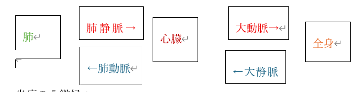

| 良性腫瘍 | 悪性腫瘍（がん） | |
|---|---|---|
| 増殖速度 | ゆっくり | 急性 |
| 増殖様式 | 局所的 | 周囲への浸潤 |
| 全身への影響 | 小さい | 大きい |
| 転移 | ない | しばしば |
| 再発 | まれ | しばしば |
| 子宮頸がん | 子宮体癌 | |
|---|---|---|
| 原因 | ヒトパピローマウイルス | 高エストロゲン |
| 病変 | 子宮頸管炎 | 子宮内膜増殖症 |
| 年齢 | 30～40代 | 50～60代 |
| 組織型 | 扁平上皮癌 | 腺癌 |
| 食道 | 胃 | 大腸 | |
|---|---|---|---|
| 組織系 | 扁平上皮癌 | 腺癌 | 腺癌 |
| 転移 | する | する（ウィルヒョウ転移） | する |
| 場所 | 中部食道（50％） | 幽門部底部湾（50％） | 直腸、Ｓ状結腸（70～80％） |
| 高分化型 | 低・未分化型 | |
|---|---|---|
| 年性 | 恒例の男性 | 若年の女性 |
| 組織像 | 胸腺を形成 | ばらばらに浸潤 |
| HP | 強い | 弱い |
| クローン病 | 潰瘍性大腸炎 | |
|---|---|---|
| 共通点 | 治りにくく若い人に好発する | |
| 症状 | 腹痛、下痢 | 粘血便 |
| 好発部 | 回盲部 | 前大腸 |
| 年齢層 | 20代 男：女＝３：１ | 中年に多い |
| 組織系 | 縦走潰瘍、肉芽種 | 陰窩膿瘍 |
| ウイルス | 感染経路 | 特徴 |
|---|---|---|
| HAV | 経口 | 小児に不顕性感染を要し、若年で急性肝炎を起こす。慢性化することは少ない |
| HBV | 血液・体液 | 新生児に感染し90％が無症状で治癒するが、10％が慢性肝炎になり、肝硬変、肝がんに移行することもある。 成人の場合は急性肝炎を起こし1～2％の確率で劇症肝炎を起こす |
| HCV | 血液・体液 | 成人に不顕性感染し、慢性肝炎、肝がんを引き起こす |
| HDV | 血液 | HBVの不顕性感染時に感染すると劇症型肝炎を起こす |
| HEV | 経口（血液） | 成人では急性肝炎を起こす。 妊婦は劇症肝炎を起こすことがある。 |
| HGV | 血液・体液 | 詳細不明、肝炎の原因ではない |